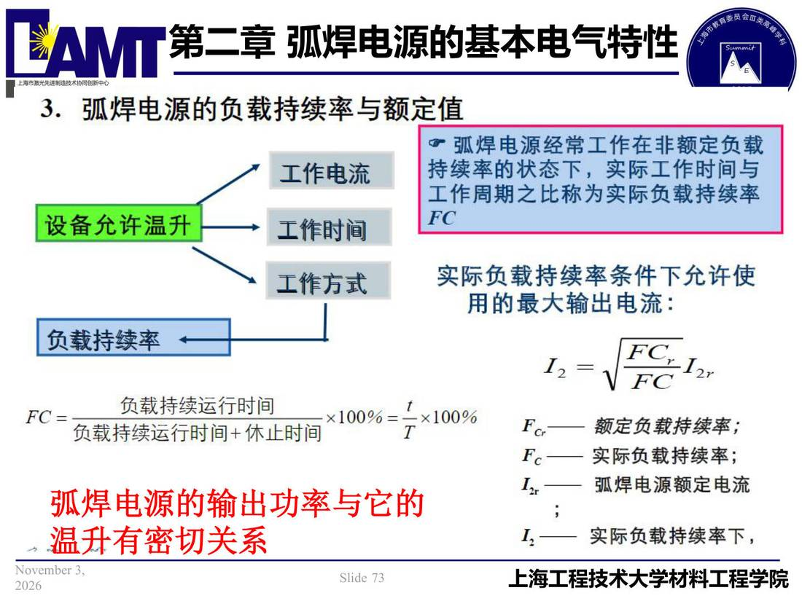

02 第2章 基本电气特性/p073 弧焊电源的输出功率与它的
p073 弧焊电源的输出功率与它的
📄 原文：📄 弧焊电源 课件（PDF 第 73 页）（幻灯片 73/273；PDF 第 73 页）
弧焊电源的输出功率与它的

讲义原文
温升有密切关系
本页标红（老师强调）
- 弧焊电源的输出功率与它的
- 温升有密切关系
页面文字（OCR 机读，可能有错字，以页图为准）
3.弧焊电源的负载持续率与额定值 工作电流 设备允许温升 弧焊电源经常工作在非额定负载 持续率的状态下，实际工作时间与 工作周期之比称为实际负载持续率 工作时间 工作方式 负载持续率← 负载持续运行时间 FC=负载持续运行时间+休止时间 x100%=卡 -✕100% 弧焊电源输出功率与它